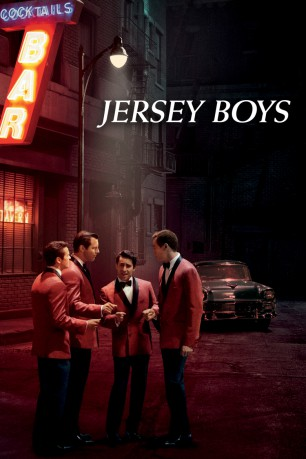

#2220 Jersey Boys
 
 IMDB-Wertung: 6.8 / 10
IMDB-Wertung: 6.8 / 10  Metascore: 54
Metascore: 54 
Sie haben ihr Leben abseits des amerikanischen Traumes satt: Vier junge Männer aus New Jersey finden zu einander und gründen eine Band. Nach mehreren Wechseln geht irgendwann die Band "The Four Seasons" daraus hervor - bestehend aus Frankie Valli, Bob Gaudio, Nick Massi und Tommy DeVito. Diese startet in den 60er Jahren durch, arbeitet mit Musikgrößen wie Fats Domino zusammen und landet Hit um Hit, machten aber auch die Bekanntschaft mit Gangstern wie Gyp DeCarlo.
Jahr: 2014
Dauer: 134 Minuten
FSK: 6
Land: USA Studio: Warner Bros.Tonspuren: DD5.1 - ,
Untertitel: Deutsch,
Auflösung: 1080p (1920x808) Größe: 5283 MB
Genre: Biographie, Drama, Musik
Regisseur:  Clint Eastwood
Clint Eastwood
Drehbuch: Marshall Brickman, Rick Elice, Marshall Brickman, Rick Elice
Soundtrack:
Darsteller:
- Vincent Piazza als Tommy DeVito
- John Lloyd Young als Frankie Valli
 Steve Schirripa als Vito
Steve Schirripa als Vito Christopher Walken als Gyp DeCarlo
Christopher Walken als Gyp DeCarlo- Kathrine Narducci als Frankie's Mother
- Lou Volpe als Frankie's Father
- Johnny Cannizzaro als Nick DeVito
 Michael Patrick McGill als Officer Mike
Michael Patrick McGill als Officer Mike- Jacqueline Mazarella als Angry Woman
- Michael Lomenda als Nick Massi
- Lacey Hannan als Angela
- Scott Vance als Detective #1
 Steve Rankin als Detective #2
Steve Rankin als Detective #2- Ivar Brogger als Judge
- Annika Noelle als Nick's Date
- Clint Ward als Officer Stanley
- Michael Butler Murray als Backup Musician #1
- Bill Watterson als Backup Musician #2
- Renée Marino als Mary
- David Newton als Guy at the Bar
- John Duerler als Bartender
 Keith Loneker als Knuckles
Keith Loneker als Knuckles- James Madio als Stosh
- Jeremy Luke als Donnie
 Louis Lombardi als Trulio
Louis Lombardi als Trulio- Allison Wilhelm als Coat Check Girl
- Vincent Selhorst-Jones als Hank
- Joseph Russo als Joey
- Erich Bergen als Bob Gaudio
- Francesca Eastwood als Waitress #1
- Alexandra Ruddy als Waitress #2
- Travis Nicholson als Country Singer
- Joe Abraham als Rockabilly Singer
- Meagan Holder als Jazz Singer
- Chaz Langley als Hal Miller
- Lou George als Publisher #1
- Michael Lanahan als Publisher #2
 Phil Abrams als Publisher #3
Phil Abrams als Publisher #3 Mike Doyle als Bob Crewe
Mike Doyle als Bob Crewe- Aria Pullman als Attractive Woman
- Tye Edwards als Crewe Bartender
- Nancy La Scala als Art Loving Woman
- Kara Pacitto als Bubble-Head #2
- Angel Murphy als Jazz-Cat
 Sean Whalen als Engineer
Sean Whalen als Engineer- Heather Ferguson Pond als Miss Frankie Nolan
 John Griffin als Billy Dixon
John Griffin als Billy Dixon Billy Gardell als Our Sons Owner
Billy Gardell als Our Sons Owner- Donnie Kehr als Norm Waxman
 Steve Monroe als Barry Belson
Steve Monroe als Barry Belson
Datei: X:\2014(G-M)\Jersey Boys (2014, FSK6, 1920x808).mkv seit 21.10.2015
Festplatte: HD 2013(I-Z)-2014(A-Z)
 Es gibt insgesamt 136 Filme in der Gruppe '2014(G-M)'
Es gibt insgesamt 136 Filme in der Gruppe '2014(G-M)'